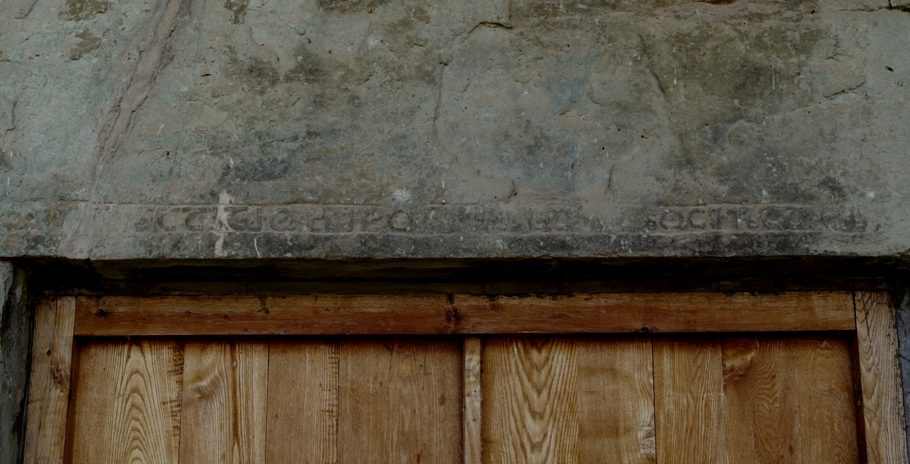

ბოლნისის სიონის 494 წ. ხელოსნების (კარის შემბმელების) ფარნავაზისა და აზარუხტის მოსახსენებელიBolnisi Sioni Cathedral 494 year, memorial of workers Pharnavaz and Azarukht
ბოლნისის სიონის 494 წ. ხელოსნების (კარის შემბმელების) ფარნავაზისა და აზარუხტის მოსახსენებელი
Bolnisi Sioni Cathedral 494 year, memorial of workers Pharnavaz and Azarukht
შინაარსი / Summary
მოსახსენებელი Memorial
ბიბლიოგრაფია Bibliography
- შოშიაშვილი, 1980, 69-70
- სარჯველაძე, დანელია, 1997, 17-18
- ბროსე, 1840, 421
- ბროსე, 1838, 107
- შანიძე, 1922, 279-280
- შანიძე, 1935, 1
- მუსხელიშვილი, 1938, 329-331
- ჩუბინაშვილი, 1940, 70-71
- შანიძე, იმნაიშვილი, 1949
- თარხნიშვილი, 1950, 250
- MIA CSCO Vol 166
- შანიძე, 1957, 280-281
- ჯავახიშვილი, 1926, 185
- შანიძე, 1975, 31
- პატარიძე, 1984, 140-159
- მჭედლიშვილი, 1984, 100-114
- ყიფიანი, 2011, 666-675
- მაჭავარიანი, 1985
კრიტიკული გამოცემა Interpretive Edition
„[შეწევ]ნითა ქ(რისტ)ჱსითა მ[ე] ფარნ[ავაზ] და აზარუხტ შეხუა[ბ]თ ესე კარი სალოცველად [ჩ(უე)ნ(და) დ]ა [შჳლთა ჩ(უე)ნთა]“
შეწევნითა ქ(რისტ)ჱსით მ ე ფარნ ავაზ და აზარუხტ შეხუა ბთ ესე კარი სალოცველად ჩ(უე)ნ(და) და შჳლთა
დიპლომატიური გამოცემა Diplomatic Edition
„[ႸႤႼႤႥ]ႬႨႧႠ Ⴕ(ႰႨႱႲ)ჁႱႨႧႠ Ⴋ[Ⴄ] ႴႠႰႬ[ႠႥႠႦ] ႣႠ ႠႦႠႰႳႾႲ ႸႤႾႳႠ[Ⴁ]Ⴇ ႤႱႤ ႩႠႰႨ ႱႠႪႭႺႥႤႪႠႣ [Ⴙ(ႳႤ)Ⴌ(ႣႠ) Ⴃ]Ⴀ [ႸჃႪႧႠ Ⴙ(ႳႤ)ႬႧႠ]“
ႸႤႼႤႥႬႨႧႠ ႵჁႱႨႧ Ⴋ Ⴄ ႴႠႰႬ ႠႥႠႦ ႣႠ ႠႦႠႰႳႾႲ ႸႤႾႳႠ ႡႧ ႤႱႤ ႩႠႰႨ ႱႠႪႭႺႥႤႪႠႣ ႹႬ ႣႠ ႸჃႪႧႠ

ბოლნისის სიონის 494 წ. ხელოსნების (კარის შემბმელების) ფარნავაზისა და აზარუხტის მოსახსენებელი
{'default': 'ქრისტეს შეწევნით მე, ფარნავაზმა, და აზარუხტმა შევაბით ეს კარი ჩვენი და ჩვენი შვილების სალოცველად. By the aid of Christ, I, Pharnavaz and Azarukht set this door for the prayers for our souls and our children.'}
{'default': 'ნოდარ შოშიაშვილის ქართული წარწერების კორპუსის მიხედვით #4. იგი პირველად გამოსცა მარი ბროსემ 1838 წელს.\n წარწერას განკვეთილობის ნიშნები არ ახლავს. სიტყვები ერთმანეთისაგან არ არის დაცილებული.\n ქარაგმის ნიშნად ნახმარია პატარა, სწორი, განივი ხაზი (მისი ნაშთი ჩანს მეორე სიტყვაზე).\n წარწერა პალეოგრაფიული თვალსაზრისით ფრიად არქაულია: თავშეკრულია Ⴁ და Ⴣ გრაფემები.\n ენობრივი თვალსაზრისით საინტერესოა ხანმეტი ზმნური ფორმა: შეხუაბთ (ხ - მესამე ირიბი ობიექტური პირის ნიშანი).\n დათარიღების საკითხი: აკაკი შანიძის აზრით, წარწერა VI საუკუნის პირველი ნახევრისაა. ლევან მუსხელიშვილი ფიქრობს, რომ იგი ტაძრის აშენების თანადროულია.\n\n აზრთა სხვადასხვაობა არსებობს დაზიანებული საკუთარი სახელის ამოკითხვის თაობაზე.\n გიორგი ჩუბინაშვილი ვარაუდობს, წარწერებში მოხსენიებული არიან ადგილობრივი ფეოდალური არისტოკრატიის ის წარმომადგენლები,\n რომელთაც შემწეობა აღმოუჩინეს დავით ეპისკოპოსს ტაძრის მშენებლობაში: ფარნ[ევან] და აზარუხტ.\n\n რამაზ პატარიძის აზრით, წარწერაში მოხსენიებული პირი ფარნავაზ არ უნდა იყოს. უფრო სავარაუდებელია ფარსმან ერისთავი.\n\n გურამ ყიფიანის მიხედვით, „დუხტ-“ ან „უხტ-“ საშუალი სპარსულით ასულს ნიშნავს და ამდენად აზარდუხტ - აზარუხტ აშა-ს (არტა) ქალიშვილია.\n ფარნევანიც და აზარუხტიც არისტოკრატული სახელებია და მკვლევრის აზრით, ეს ორი პიროვნება არისტოკრატულ წყვილს წარმოადგენს.\n\n ვალერი სილოგავა ფიქრობს, რომ „ფარნევანის“ „ფარნავაზად“ ამოკითხვა სინამდვილეს დაშორებულია, რადგანაც Ⴌ-ს მერე Ⴈ-ს ან Ⴄ-ს კონტური ჩანს.\n ნოდარ შოშიაშვილის მიერ გამოცემაში ხელოსნებად წარმოდგენილი „ფარნავაზ“ და „აზარუხტი“ ქტიტორები უნდა იყვნენ,\n რადგან ფორმულით - „სალოცველად ჩუენდა და შვილთა ჩუენთა“ - მთავრდება სწორედ ქტიტორული წარწერების ტექსტები.\n ვალერი სილოგავა ფიქრობს, რომ „აზარუხტ“ თუ „აზარ(დ)უხტ“, როგორც - უხტ/დუხტ მაწარმოებელ კომპონენტიანი სახელი, შეიძლება ქალის სახელად მივიჩნიოთ\n და ფარნევან და აზარუხტ ცოლ-ქმრად ჩავთვალოთ. According to the Corpus of Georgian inscriptions by Nodar Shoshiashvili, the inscription N 4 was first published by Mari Brose in 1838. The Inscription does not have spaces. No spaces between the words. and the symbol of abbreviation is a small, straight horizontal line (its remains are only visible on the second word in the text). The paleographic data proves the early origins of the inscription. The graphemes: ბ, ჳ have their heads engaged. In linguistic terms a special interest attracts to the Khanmeti type verbal form: შეხუაბთ (ხ - - is the indirect object pronoun of the third person. The question of date: According to Akaki Shanidze, the inscription must belong to the first part of the 6th century. Levan Muskhelishvili believes that it must be contemporary to the building of the church.'}
<div type="edition" xml:lang="ka" ana="mtavruli" xml:space="preserve">
<ab>
<lb n="1"/><w lemma="ქრისტე"><expan><abbr>ქ</abbr><ex>რისტ</ex><abbr>ე</abbr></expan></w>
<w lemma="განსუენება"><expan><abbr>გა</abbr><ex>ნ</ex><abbr>ო</abbr><ex>ჳ</ex><abbr>ს</abbr><ex>უ</ex><abbr>ენე</abbr></expan></w>
<w lemma="სულ">სოჳ<lb n="2" break="no"/>ლსა</w>
<name nymRef="ვაჩა">ვაჩაჲს<lb n="3" break="no"/>ასა</name>
<name nymRef="გურა"><expan><abbr>გო</abbr><ex>ჳ</ex><abbr>რაჲ<lb n="4" break="no"/>სასა</abbr></expan></name>
<name nymRef="მირა"><expan><abbr>მ</abbr><ex>ი</ex><abbr>რა</abbr><ex>ჲ</ex><abbr>ს</abbr><ex>ა</ex><abbr>ს</abbr><ex>ა</ex></expan></name>
</ab>
</div>